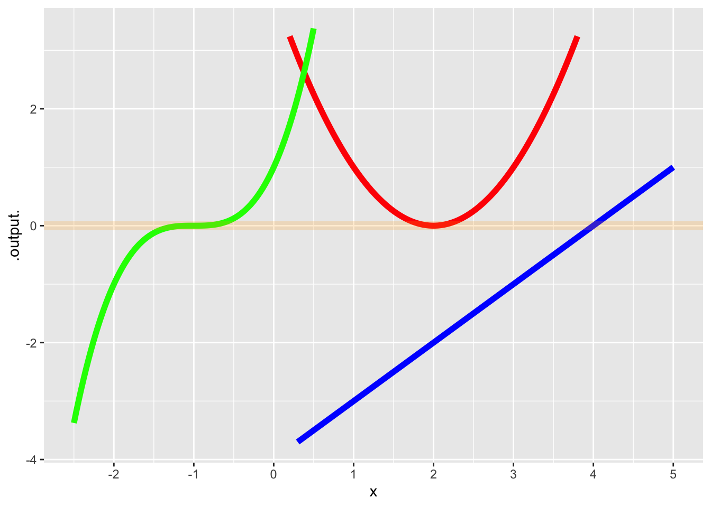

25 Approximation near a reference input
Back in Chapter 24 we considered eight simple shapes for functions of one input:


All these simple shapes can be generated with the same function formula and appropriate values for parameters \(a\), \(b\), and \(c\).
\[g(x) \equiv a_0 + a_1 x + a_2 x^2\] This chapter examines the possibilities for extending the formula a bit, to include higher-order terms, e.g. \[h(x) \equiv a_0 + a_1 x + a_2 x^2 + a_3 x^3 + a_4 x^4 + \cdots\]
We’ll consider two possible applications:
- Creating an arithmetically simple approximation to a function whose formula is already known. Such approximations are known as Taylor polynomials.
- Creating a function to capture the patterns in data, as in Chapter 24. It turns out that this is a dubious practice. We discuss the reasons why so that you can know to avoid using high-order polynomials to fit data.
25.1 The reference point
Since this is all about approximations, we need to have a way to specify the neighborhood of the function domain in which the approximation is intended to be good enough for use. We can use the same approach that turned the naked modeling functions (e.g., \(x\), \(x^2\), …) into the basic modeling functions: replacing \(x\) in the polynomial with \(\line(x)\). But unlike the basic modeling functions, where the useful form of \(\line()\) was usually \(ax + b\), here, we’ll use just a shift form of line, where the slope is 1:
\[\text{shift}(x) \equiv \left[\strut x - x_0\right]\] The parameter \(x_0\) is called the reference point. For a power-law function, \[\left[\strut\text{shift}(x)\right]^n = \left[\strut x - x_0\right]^n\] the output is always zero when \(x=x_0\), which will be a matter of considerable importance as we go on. Also, note that we’re using square braces \(\left[\ \ \right]\) simply to make it completely unambiguous what is being exponentiated.
Here are graphs of three power-law functions (that is, \(\left[x-x_0\right]^n\)) with different values of \(x_0\):
Question A For the blue function, what is \(x_0\)?
-2 ☹︎ -1 ☹︎ 0 ☹︎ 1 ☹︎ 2 ☹︎ 3 ☹︎ 4 ✓ 5 ☹︎
Question B For the blue function, what is the order of the polynomial?
0 ☹︎ 1 ✓ 2 ☹︎ 3 ☹︎ 4 ☹︎ 5 ☹︎
Question C For the red function, what is \(x_0\)?
-2 ☹︎ -1 ☹︎ 0 ☹︎ 1 ☹︎ 2 ✓ 3 ☹︎ 4 ☹︎ 5 ☹︎
Question D For the red function, what is the order of the polynomial?
0 ☹︎ 1 ✓ 2 ☹︎ 3 ☹︎ 4 ☹︎ 5 ☹︎
Question E For the green function, what is \(x_0\)?
-2 ☹︎ -1 ☹︎ 0 ☹︎ 1 ☹︎ 2 ☹︎ 3 ☹︎ 4 ✓ 5 ☹︎
Question F For the green function, what is the order of the polynomial?
0 ☹︎ 1 ☹︎ 2 ☹︎ 3 ✓ 4 ☹︎ 5 ☹︎With the reference point \(x_0\) we will re-write the approximating polynomial as \[h(x) \equiv a_0 + a_1 [x-x_0] + a_2 [x - x_0]^2 + a_3 [x - x_0]^3 + \cdots\] This format is convenient because in finding the \(a_0\), \(a_1\), \(\ldots\) for approximating a function \(f(x)\) in the neighborhood of \(x_0\), we have a way to calculate quickly the value of \(a_0\). Note that at \(x=x_0\), all the terms in the polynomial go to zero except the first, so we know \(a_0 = f(x_0)\).
Now consider the derivative of the approximating polynomial. This is \[\partial_x h(x) = a_1 + 2 \times a_2 [x-x_0] + 3 \times a_3 [x-x_0] + \cdots\] Again, at \(x=x_0\) all the terms except the first go to zero. So if \(h(x)\) is an approximation to \(f(x)\) we’ll have \(a_1 = \partial_x f(x_0)\).
We can do this as many times as we want. Here’s the second derivative \(\partial_{xx} h(x)\): \[\partial_{xx} h(x) = 2 a_2 + 2 \times 3 \times a_3 [x-x_0] + \cdots\] and the third \[\partial_{xxx} h(x) = 2 \times 3 \times a_3 + \cdots\]
As before, all the terms in \(\partial_{xx} h()\) and \(\partial_{xxx} h()\) except the first go to zero when \(x=x_0\). This implies \[a_2 = \frac{1}{2} \partial_{xx} f(x_0) \ \ \ \text{and}\ \ \ a_3 = \frac{1}{2\times 3} \partial_{xxx}f(x_0)\] Just following the pattern, we can guess that \(a_4 = \frac{1}{2 \times 3 \times 4} \partial_{xxxx} f(x_0)\) and, in general for the nth term \[a_n = \frac{1}{1\times 2 \times 3 \times \cdots \times n} \partial^n f(x_0)\] We’re writing \[{\huge \partial^n} \ \text{to stand for}\ \ \stackrel{\Huge \partial}{\ } \underbrace{xx...x}_\text{n times}\]
The quantity \(1\times 2 \times 3 \times \cdots \times n\) is called a factorial and written \[\huge n! = 1\times 2 \times 3 \times \cdots \times n\]
In case you’re not already familiar with factorials, note the following: \[1! = 1\\ 2! = 2\\ 3! = 6\\ 4! = 24\\ 5! = 120\\ \text{... and so on} \]
In R, use the factorial() function to calculate \(n!\) for instance:
factorial(5)## [1] 120
factorial(6)## [1] 720
factorial(7)## [1] 5040
factorial(10)## [1] 3628800
factorial(15)## [1] 1.3077e+1225.2 Taylor polynomials
Putting together everything in the previous sections, we arrive at a remarkable formula for a polynomial to approximate any smooth, continuous function \(f(x)\) in the neighborhood of a selected input \(x_0\). The overall formula is daunting at first glance, but each of the terms has the same pattern: \[f(x) \approx f(x_0) + \frac{\partial_x f(x_0)}{1!} [x - x_0]^1 + \frac{\partial_{xx} f(x_0)}{2!} [x - x_0]^2 + \frac{\partial_{xxx} f(x_0)}{3!} [x - x_0]^3 + \ldots \] This is the Taylor polynomial. A Taylor polynomial that terminates with the \([x-x_0]^2\) term is a second-order Taylor polynomial, one that terminates with the \([x-x_0]^3\) term is a third-order Taylor polynomial. Mathematicians are particularly interested in the \(n\)th-order Taylor polynomial where \(n \rightarrow \infty\).
Construction of a Taylor polynomial involves finding the various orders of derivatives. There are some cases where this is simple, especially if a felicitous choice of \(x_0\) can be made.
Example: The successive derivatives of \(\sin(x)\) are \(cos(x)\), then \(-\sin(x)\), then \(-\cos(x)\), then back to \(\sin(x)\) and onward to any order derivative you like. If we select \(x_0=0\), then each of the derivatives evaluated at \(x_0\) will be zero, \(-1\), or \(1\). The Taylor polynomial (to 5th order) of \(\sin(x)\) is: \[\sin(x) \approx 0 + \frac{1}{1!}[x] + \frac{0}{2!} [x]^2 - \frac{1}{3!} [x]^3 + \frac{0}{4!} [x]^4 + \frac{1}{5!} [x]^5 = x - \frac{x^3}{3!} + \frac{x^5}{5!}\]
Why say “smooth, continuous function” instead of just function when talking about the kinds of functions Taylor polynomials can approximate?
Keep in mind that each of the terms in the polynomial has the form \(a_n [x-x_0]^n\) for \(n=1,2,3, \ldots\). Each of these is a power-law function and therefore smooth and continuous. So the polynomial—the sum of the individual terms—will always be smooth and continous. If \(f()\) is not, no promises can be given about the quality of the approximation.
25.3 Polynomials and data
In which we’ll show that high-order polynomials are trouble.
Do data that’s close to a straight line, and look at the stability of the polynomials.
Then show how sensitive a high-order polynomial is to slight changes in the data.
The following graph shows a function \(f(x)\). Five values of \(x\) are labelled A, B, …. These are the possible values of \(x_0\) in the questions.

Each of the graphs that follow show an approximation to \(f(x)\) at one of the points A, B, …. in the above graph. The approximations are either constant (“order 0” approximation), linear (“order 1” approximation), quadratic (“order 2” approximation), or something else. For each graph, say what order approximation is being used.
Question A What order approximation in graph (I)?
constant ✓ linear ☹︎ A linear approximation would have exactly the same slope as \(f()\) at the reference point \(x_0\). quadratic ☹︎ none of these ☹︎
Question B What is the reference position \(x_0\) for approximation in graph (I)?
A ☹︎ Not a bad choice, but notice that the constant approximation has a value a little lower than f(A). B ✓ You’re right. This has the correct value for f(B). C ☹︎ D ☹︎ E ☹︎ None of them ☹︎

Question C What order approximation in graph (II)?
constant ☹︎ linear ☹︎ quadratic ✓ none of these ☹︎
Question D What is the reference position \(x_0\) for approximation in graph (II)?
A ☹︎ B ☹︎ C ✓ D ☹︎ At the reference position, the value of the approximation should always be \(f(x_0)\). That’s not the case here. E ☹︎ None of them ☹︎

Question E What order approximation in graph (III)?
constant ☹︎ linear ☹︎ quadratic ☹︎ none of these ✓ You can’t have two bends in a linear or quadratic function.
Question F What is the reference position \(x_0\) for approximation in graph (III)?
A ☹︎ B ☹︎ C ☹︎ D ☹︎ At the reference position, the value of the approximation should always be \(f(x_0)\). That’s not the case here. E ☹︎ None of them ✓ It’s not a polynomial approximation at any of those points.
Question G What order approximation in graph (IV)?
constant ☹︎ linear ✓ quadratic ☹︎ none of these ☹︎
Question H What is the reference position \(x_0\) for approximation in graph (IV)?
A ✓ B ☹︎ C ☹︎ D ☹︎ E ☹︎ None of them ☹︎
Question I What order approximation in graph (V)?
constant ☹︎ linear ☹︎ quadratic ✓ none of these ☹︎
Question J What is the reference position \(x_0\) for approximation in graph (V)?
A ☹︎ B ☹︎ C ☹︎ D ☹︎ E ☹︎ None of them ✓Here is a somewhat complex function in two variables. The labels A, B, C, D mark some possible reference points \((x_0, y_0)\) around which polynomial approximations are being made.
For each of the following graphs, say what kind of two-variable polynomial approximation is being made and which reference point the approximation is centered on.
Question A What order approximation in graph (I)?
constant ☹︎ linear ☹︎ The contours would be straight if the approximation were linear bilinear ✓ Right. But it turns out that the quadratic approximation is similar, presumably because \(d_{xx}f(x_0, y_0)\) and \(d_{yy} f(x_0, y_0)\) are too small to make a difference. quadratic ☹︎ Not a bad answer. In this case, the bilinear approximation looks a lot like the quadratic.
Question B What is the reference position \((x_0, y_0)\) for approximation in graph (I)?
A ✓ B ☹︎ C ☹︎ D ☹︎
 Question C What order approximation in graph (II)?
Question C What order approximation in graph (II)?
constant ☹︎ linear ☹︎ The contours would be straight if the approximation were linear bilinear ✓ Right. But it turns out that the quadratic approximation is similar, presumably because \(d_{xx}f(x_0, y_0)\) and \(d_{yy} f(x_0, y_0)\) are too small to make a difference. quadratic ☹︎ The circular (or elliptical) contours are the hallmark of a quadratic approximation near a maximum or minimum.
Question D What is the reference position \((x_0, y_0)\) for approximation in graph (II)?
A ☹︎ B ✓ Practically a bullseye on B! C ☹︎ D ☹︎

Question E What order approximation in graph (III)?
constant ☹︎ linear ✓ A linear approximation always produces straight, parallel, evenly spaced contours. bilinear ☹︎ quadratic ☹︎
Question F What is the reference position \((x_0, y_0)\) for approximation in graph (III)?
A ☹︎ B ☹︎ C ☹︎ D ✓
 Question G What order approximation in graph (IV)?
Question G What order approximation in graph (IV)?
constant ☹︎ linear ☹︎ The contours would be straight if the approximation were linear bilinear ☹︎ Not a bad answer. But curvature in bilinear approximations is always in one direction. quadratic ✓ Sometimes quadratic approximations produce elliptical contours, as in a previous problem. But sometimes they produce the X-shaped contours seen here. In both cases, the contours curve in opposing ways in different parts of the domain. By the way, the contour pattern seen in the upper right of this graph corresponds to the shape of a saddle: curving up along one line and down along the perpendicular line. The place right in the middle of the saddle is called a ‘saddle point.’
Question H What is the reference position \((x_0, y_0)\) for approximation in graph (IV)?
A ☹︎ B ☹︎ C ✓ D ☹︎